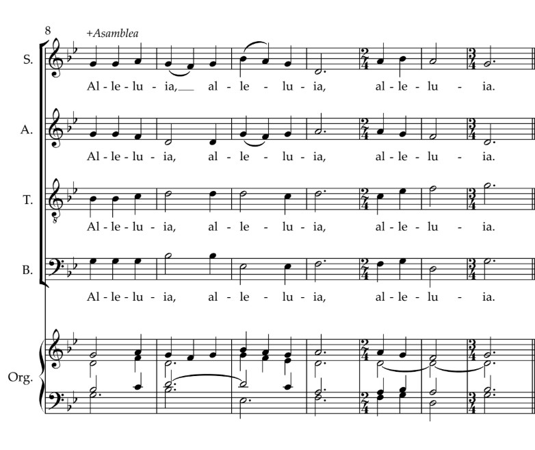

Tiempo pascual
FA#m RE DO#m FA#m
Aleluya, aleluya, aleluya.
FA#m MI-FA#m
Oh, hijos e hijas:
FA#m MI FA#m
el Rey Celestial, el Rey de la Gloria,
RE DO#m
resucitó de entre los muertos,
FA#m
aleluya.
Partitura en SOLm
